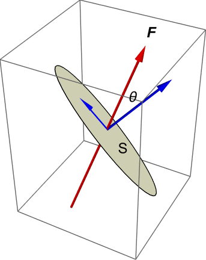
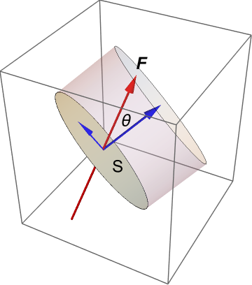
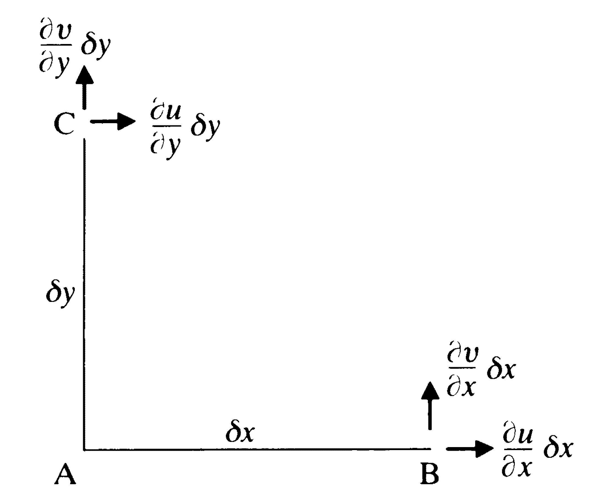

3.4. Divergence and vorticity¶
In this section:
Can divergence be inferred from looking at a plot of the vector field?
How can a vortex have zero vorticity ?
3.4.1. What is flux?¶
Consider a small (strictly infinitesimal) surface element \(S\) within a field \(\underline{F}\), such that the surface normal makes an angle \(\theta\) to the direction of the field, as shown. The components of the field in directions parallel and perpendicular to the surface are illustrated in blue. The perpendicular component has magnitude \(F\cos{\theta}\). The parallel component remains bounded by the surface.

{kind=link}
Multiplying the normal component of the field by the area of the surface element gives the volume indicated by the shaded cylinder in the image below. It is a scalar quantity, which tells us the instantaneous rate of flow through the surface per unit time. Mathematically, the flow rate across the surface \(S\) is given by
where \(\hat{\underline{n}}\) is the unit normal to the surface.

{kind=link}
The quantity \(\underline{F}.\hat{\underline{n}}\) gives the flow rate per unit area, which is called the flux. Integrating the flux over a given finite surface area \(A\) is equivalent to summing the individual surface element contributions to the flow rate, in the limit. The resulting flow rate \(Q\) is given by
Most authors (including me!) use the terms flow rate and flux interchangeably, though flux is more pedantically defined as the flow rate per unit area. However, the intended meaning is almost always clear from the context and the surrounding text.
Examples
Net volumetric flux is the rate of volume flow across a given area, \(\displaystyle \int_A\underline{u}.d\underline{S}\)
Net mass flux is the rate of mass flow across a given area, \(\displaystyle \int_A r\underline{u}.d\underline{S}\)
Flux density
Notice that the flux \(\underline{F}.\hat{\underline{n}}\) is directly proportional to the field strength \(F\). For this reason, the field strength is sometimes referred to as the flux density.
This description fits quite well with field line depictions, since the field strength can be inferred from how close together (dense) the field lines are. However, the term flux density is mainly reserved for the context of electricity and magnetism.
3.4.2. What is divergence?¶
Suppose that a given point within a field \(\underline{F}=(f_x,f_y,f_z)\) is surrounded by a closed surface, \(S\) as illustrated below:

It can be shown (divergence theorem) that the flux \(Q\) through surface \(S\) is equivalent to a volume integral:
where the divergence \(\nabla.\underline{F}\) is given by:
By applying the Fundamental Theorem of Calculus to (3.22), we obtain the result
Hence, divergence can be understood as the flux per unit volume through an infinitesimally-small closed surface surrounding a point. A point with positive divergence behaves like a source, and a point with negative divergence behaves like a sink.
See also
For further discussion of the divergence theorem and related concepts, visit Khan Academy
Exercise 3.7
Calculate the divergence of the potential flow you looked at in Exercise 3.3, and produce a grayscale plot of the divergence on the range \(-2\leq x,y \leq 2.\)
3.4.3. What is vorticity?¶
Vorticity is a measure of the local rotation or spin of fluid particles. It is defined as the curl of the velocity vector \((u,v,w)\):
An illustrated interpretation of vorticity is given below, looking only at the \(z\)-component for simplicity. Note that the subscript notation used on the diagram represents partial differentiation, not a vector component. We consider two fluid line elements \(AB\) and \(AC\), which are aligned with the \(x\) and \(y\) axes, respectively. By the definition of the partial derivative, we can write
so
\(\displaystyle \frac{\partial v}{\partial x}\) represents the instantaneous angular velocity of the fluid line element \(AB\)
\(\displaystyle\frac{\partial u}{\partial y}\) represents the instantaneous angular velocity of the fluid line element \(AC\)
The local anticlockwise spin about \(A\) is therefore given by \(\displaystyle \frac{\partial v}{\partial x}-\frac{\partial u}{\partial y}\).

{kind=link}
It is important to recognise that the vorticity is not related to the global rotation of the fluid. To illustrate this, we will consider the vorticity of some basic flows, which are either rotating or not rotating.
Example 1: Shear flow
Consider a two-dimensional “shear” velocity profile described by \(\underline{u}=(\sqrt{y},0,0).\)
This flow is a rectilinear flow; meaning that it is not rotating as a whole, as can be seen from the image below. However, the vorticity is non-zero since fluid particles are rotated by the shearing force, as would be seen by an observer following the fluid.
import matplotlib.pyplot as plt
import numpy as np
x=np.linspace(0, 4, 4)
y=np.linspace(0, 1, 20)
X,Y = np.meshgrid(x, y)
(U,V)=(Y**(1/2),0)
fig,ax=plt.subplots(figsize=(10,3))
ax.axis([0,5,0,1])
ax.xaxis.set_ticks([]), ax.yaxis.set_ticks([])
ax.quiver(X,Y,U,V,scale=5,width=0.004)
plt.show()
C:\Users\Ali\anaconda3\lib\site-packages\numpy\core\getlimits.py:172: RuntimeWarning: divide by zero encountered in exp2
eps=exp2(ld(-112)),
C:\Users\Ali\anaconda3\lib\site-packages\numpy\core\getlimits.py:51: RuntimeWarning: divide by zero encountered in log10
self.precision = int(-log10(self.eps))
C:\Users\Ali\anaconda3\lib\site-packages\numpy\core\getlimits.py:52: RuntimeWarning: divide by zero encountered in power
self.resolution = float_to_float(float_conv(10) ** (-self.precision))
C:\Users\Ali\anaconda3\lib\site-packages\numpy\core\getlimits.py:184: RuntimeWarning: divide by zero encountered in exp2
epsneg_f80 = exp2(ld(-64))
C:\Users\Ali\anaconda3\lib\site-packages\numpy\core\getlimits.py:185: RuntimeWarning: divide by zero encountered in exp2
tiny_f80 = exp2(ld(-16382))
C:\Users\Ali\anaconda3\lib\site-packages\numpy\core\getlimits.py:199: RuntimeWarning: divide by zero encountered in exp2
eps=exp2(ld(-63)),
C:\Users\Ali\anaconda3\lib\site-packages\numpy\core\getlimits.py:212: RuntimeWarning: divide by zero encountered in nextafter
if hasattr(umath, 'nextafter') # Missing on some platforms?
C:\Users\Ali\anaconda3\lib\site-packages\numpy\core\getlimits.py:224: RuntimeWarning: divide by zero encountered in exp2
eps=exp2(ld(-105)),
C:\Users\Ali\anaconda3\lib\site-packages\numpy\core\getlimits.py:225: RuntimeWarning: divide by zero encountered in exp2
epsneg= exp2(ld(-106)),
C:\Users\Ali\anaconda3\lib\site-packages\numpy\core\getlimits.py:227: RuntimeWarning: divide by zero encountered in exp2
tiny=exp2(ld(-1022)))
C:\Users\Ali\anaconda3\lib\site-packages\numpy\__init__.py:343: RuntimeWarning: divide by zero encountered in subtract
if not abs(x.dot(x) - 2.0) < 1e-5:
C:\Users\Ali\anaconda3\lib\site-packages\numpy\__init__.py:343: RuntimeWarning: divide by zero encountered in absolute
if not abs(x.dot(x) - 2.0) < 1e-5:
C:\Users\Ali\anaconda3\lib\site-packages\numpy\core\function_base.py:127: RuntimeWarning: divide by zero encountered in multiply
start = asanyarray(start) * 1.0
C:\Users\Ali\anaconda3\lib\site-packages\numpy\core\function_base.py:128: RuntimeWarning: divide by zero encountered in multiply
stop = asanyarray(stop) * 1.0
C:\Users\Ali\anaconda3\lib\site-packages\numpy\core\function_base.py:134: RuntimeWarning: divide by zero encountered in double_scalars
delta = stop - start
C:\Users\Ali\anaconda3\lib\site-packages\numpy\core\function_base.py:141: RuntimeWarning: divide by zero encountered in double_scalars
step = delta / div
C:\Users\Ali\anaconda3\lib\site-packages\numpy\core\_methods.py:56: RuntimeWarning: divide by zero encountered in reduce
return umr_any(a, axis, dtype, out, keepdims)
C:\Users\Ali\anaconda3\lib\site-packages\numpy\core\function_base.py:151: RuntimeWarning: divide by zero encountered in multiply
y *= step
C:\Users\Ali\anaconda3\lib\site-packages\numpy\core\function_base.py:161: RuntimeWarning: divide by zero encountered in add
y += start
C:\Users\Ali\anaconda3\lib\site-packages\matplotlib\colors.py:850: RuntimeWarning: divide by zero encountered in double_scalars
[(1.0 - x, y1, y0) for x, y0, y1 in reversed(data)])
C:\Users\Ali\anaconda3\lib\site-packages\matplotlib\tri\triinterpolate.py:669: RuntimeWarning: divide by zero encountered in true_divide
gauss_w = np.ones([9], dtype=np.float64) / 9.
C:\Users\Ali\anaconda3\lib\site-packages\numpy\core\function_base.py:127: RuntimeWarning: divide by zero encountered in multiply
start = asanyarray(start) * 1.0
C:\Users\Ali\anaconda3\lib\site-packages\numpy\core\function_base.py:128: RuntimeWarning: divide by zero encountered in multiply
stop = asanyarray(stop) * 1.0
C:\Users\Ali\anaconda3\lib\site-packages\numpy\core\function_base.py:134: RuntimeWarning: divide by zero encountered in double_scalars
delta = stop - start
C:\Users\Ali\anaconda3\lib\site-packages\numpy\core\function_base.py:141: RuntimeWarning: divide by zero encountered in double_scalars
step = delta / div
C:\Users\Ali\anaconda3\lib\site-packages\numpy\core\_methods.py:56: RuntimeWarning: divide by zero encountered in reduce
return umr_any(a, axis, dtype, out, keepdims)
C:\Users\Ali\anaconda3\lib\site-packages\numpy\core\function_base.py:151: RuntimeWarning: divide by zero encountered in multiply
y *= step
C:\Users\Ali\anaconda3\lib\site-packages\numpy\core\function_base.py:161: RuntimeWarning: divide by zero encountered in add
y += start
C:\Users\Ali\anaconda3\lib\site-packages\ipykernel_launcher.py:8: RuntimeWarning: divide by zero encountered in sqrt
C:\Users\Ali\anaconda3\lib\site-packages\matplotlib\figure.py:321: RuntimeWarning: divide by zero encountered in isfinite
if not np.isfinite(figsize).all() or (np.array(figsize) < 0).any():
C:\Users\Ali\anaconda3\lib\site-packages\numpy\core\_methods.py:62: RuntimeWarning: divide by zero encountered in reduce
return umr_all(a, axis, dtype, out, keepdims)
C:\Users\Ali\anaconda3\lib\site-packages\matplotlib\figure.py:321: RuntimeWarning: divide by zero encountered in less
if not np.isfinite(figsize).all() or (np.array(figsize) < 0).any():
C:\Users\Ali\anaconda3\lib\site-packages\matplotlib\transforms.py:1996: RuntimeWarning: divide by zero encountered in double_scalars
self._mtx[0, 0] *= sx
C:\Users\Ali\anaconda3\lib\site-packages\matplotlib\transforms.py:1997: RuntimeWarning: divide by zero encountered in double_scalars
self._mtx[0, 1] *= sx
C:\Users\Ali\anaconda3\lib\site-packages\matplotlib\transforms.py:1998: RuntimeWarning: divide by zero encountered in double_scalars
self._mtx[0, 2] *= sx
C:\Users\Ali\anaconda3\lib\site-packages\matplotlib\transforms.py:1999: RuntimeWarning: divide by zero encountered in double_scalars
self._mtx[1, 0] *= sy
C:\Users\Ali\anaconda3\lib\site-packages\matplotlib\transforms.py:2000: RuntimeWarning: divide by zero encountered in double_scalars
self._mtx[1, 1] *= sy
C:\Users\Ali\anaconda3\lib\site-packages\matplotlib\transforms.py:2001: RuntimeWarning: divide by zero encountered in double_scalars
self._mtx[1, 2] *= sy
C:\Users\Ali\anaconda3\lib\site-packages\matplotlib\gridspec.py:203: RuntimeWarning: divide by zero encountered in subtract
fig_tops, fig_bottoms = (top - cell_hs).reshape((-1, 2)).T
C:\Users\Ali\anaconda3\lib\site-packages\matplotlib\gridspec.py:204: RuntimeWarning: divide by zero encountered in add
fig_lefts, fig_rights = (left + cell_ws).reshape((-1, 2)).T
C:\Users\Ali\anaconda3\lib\site-packages\numpy\core\_methods.py:43: RuntimeWarning: divide by zero encountered in reduce
return umr_minimum(a, axis, None, out, keepdims, initial, where)
C:\Users\Ali\anaconda3\lib\site-packages\numpy\core\_methods.py:39: RuntimeWarning: divide by zero encountered in reduce
return umr_maximum(a, axis, None, out, keepdims, initial, where)
C:\Users\Ali\anaconda3\lib\site-packages\matplotlib\transforms.py:361: RuntimeWarning: divide by zero encountered in double_scalars
return points[1, 0] - points[0, 0]
C:\Users\Ali\anaconda3\lib\site-packages\matplotlib\transforms.py:367: RuntimeWarning: divide by zero encountered in double_scalars
return points[1, 1] - points[0, 1]
C:\Users\Ali\anaconda3\lib\site-packages\numpy\lib\function_base.py:1281: RuntimeWarning: divide by zero encountered in subtract
a = op(a[slice1], a[slice2])
C:\Users\Ali\anaconda3\lib\site-packages\matplotlib\ticker.py:2165: RuntimeWarning: divide by zero encountered in less_equal
if np.any(np.diff(steps) <= 0) or steps[-1] > 10 or steps[0] < 1:
C:\Users\Ali\anaconda3\lib\site-packages\numpy\core\fromnumeric.py:87: RuntimeWarning: divide by zero encountered in reduce
return ufunc.reduce(obj, axis, dtype, out, **passkwargs)
C:\Users\Ali\anaconda3\lib\site-packages\matplotlib\ticker.py:2179: RuntimeWarning: divide by zero encountered in multiply
flights = (0.1 * steps[:-1], steps, 10 * steps[1])
C:\Users\Ali\anaconda3\lib\site-packages\matplotlib\ticker.py:2179: RuntimeWarning: divide by zero encountered in double_scalars
flights = (0.1 * steps[:-1], steps, 10 * steps[1])
C:\Users\Ali\anaconda3\lib\site-packages\matplotlib\axes\_base.py:3210: RuntimeWarning: divide by zero encountered in isfinite
and not np.isfinite(converted_limit)):
C:\Users\Ali\anaconda3\lib\site-packages\matplotlib\transforms.py:2792: RuntimeWarning: divide by zero encountered in isfinite
if (not np.isfinite(vmin)) or (not np.isfinite(vmax)):
C:\Users\Ali\anaconda3\lib\site-packages\matplotlib\transforms.py:2805: RuntimeWarning: divide by zero encountered in double_scalars
if maxabsvalue < (1e6 / tiny) * np.finfo(float).tiny:
C:\Users\Ali\anaconda3\lib\site-packages\matplotlib\transforms.py:1977: RuntimeWarning: divide by zero encountered in double_scalars
self._mtx[0, 2] += tx
C:\Users\Ali\anaconda3\lib\site-packages\matplotlib\transforms.py:1978: RuntimeWarning: divide by zero encountered in double_scalars
self._mtx[1, 2] += ty
C:\Users\Ali\anaconda3\lib\site-packages\matplotlib\lines.py:70: RuntimeWarning: divide by zero encountered in long_scalars
scaled_offset = offset * lw
C:\Users\Ali\anaconda3\lib\site-packages\numpy\ma\core.py:2365: RuntimeWarning: divide by zero encountered in isfinite
condition = ~(np.isfinite(a))
C:\Users\Ali\anaconda3\lib\site-packages\numpy\ma\core.py:2365: RuntimeWarning: divide by zero encountered in invert
condition = ~(np.isfinite(a))
C:\Users\Ali\anaconda3\lib\site-packages\numpy\ma\core.py:1753: RuntimeWarning: divide by zero encountered in logical_or
return make_mask(umath.logical_or(m1, m2), copy=copy, shrink=shrink)
C:\Users\Ali\anaconda3\lib\site-packages\matplotlib\transforms.py:1712: RuntimeWarning: divide by zero encountered in equal
return np.all(self.get_matrix() == other.get_matrix())
C:\Users\Ali\anaconda3\lib\site-packages\matplotlib\axes\_base.py:2142: RuntimeWarning: divide by zero encountered in isfinite
if not np.any(np.isfinite(xys)):
C:\Users\Ali\anaconda3\lib\site-packages\ipykernel\pylab\backend_inline.py:195: RuntimeWarning: divide by zero encountered in greater
return rgbaArr[:,:3].dot((.299, .587, .114)) > .5
C:\Users\Ali\anaconda3\lib\site-packages\matplotlib\transforms.py:373: RuntimeWarning: divide by zero encountered in subtract
return points[1] - points[0]
C:\Users\Ali\anaconda3\lib\site-packages\matplotlib\transforms.py:813: RuntimeWarning: divide by zero encountered in double_scalars
return Bbox.from_extents(x0, y0, x0 + width, y0 + height)
C:\Users\Ali\anaconda3\lib\site-packages\matplotlib\transforms.py:993: RuntimeWarning: divide by zero encountered in not_equal
if np.any(self._points != other.get_points()):
C:\Users\Ali\anaconda3\lib\site-packages\matplotlib\transforms.py:379: RuntimeWarning: divide by zero encountered in double_scalars
return (x0, y0, x1 - x0, y1 - y0)
C:\Users\Ali\anaconda3\lib\site-packages\matplotlib\quiver.py:648: RuntimeWarning: divide by zero encountered in multiply
uv = (U + V * 1j)
C:\Users\Ali\anaconda3\lib\site-packages\matplotlib\quiver.py:648: RuntimeWarning: divide by zero encountered in add
uv = (U + V * 1j)
C:\Users\Ali\anaconda3\lib\site-packages\matplotlib\quiver.py:664: RuntimeWarning: divide by zero encountered in absolute
a = np.abs(uv)
C:\Users\Ali\anaconda3\lib\site-packages\matplotlib\quiver.py:686: RuntimeWarning: divide by zero encountered in multiply
length = a * (widthu_per_lenu / (self.scale * self.width))
C:\Users\Ali\anaconda3\lib\site-packages\numpy\core\_methods.py:96: RuntimeWarning: divide by zero encountered in isnan
return um.isnan(a)
C:\Users\Ali\anaconda3\lib\site-packages\numpy\core\_methods.py:112: RuntimeWarning: divide by zero encountered in clip
return ufunc(*args, out=out, **kwargs)
C:\Users\Ali\anaconda3\lib\site-packages\matplotlib\quiver.py:721: RuntimeWarning: divide by zero encountered in multiply
x = x + np.array([0, 1, 1, 1]) * length
C:\Users\Ali\anaconda3\lib\site-packages\matplotlib\quiver.py:721: RuntimeWarning: divide by zero encountered in add
x = x + np.array([0, 1, 1, 1]) * length
C:\Users\Ali\anaconda3\lib\site-packages\matplotlib\quiver.py:722: RuntimeWarning: divide by zero encountered in multiply
y = 0.5 * np.array([1, 1, self.headwidth, 0], np.float64)
C:\Users\Ali\anaconda3\lib\site-packages\matplotlib\quiver.py:727: RuntimeWarning: divide by zero encountered in multiply
y0 = 0.5 * np.array([1, 1, self.headwidth, 0], np.float64)
C:\Users\Ali\anaconda3\lib\site-packages\matplotlib\quiver.py:731: RuntimeWarning: divide by zero encountered in multiply
Y[:, 3:-1] *= -1
C:\Users\Ali\anaconda3\lib\site-packages\matplotlib\quiver.py:734: RuntimeWarning: divide by zero encountered in multiply
Y0[3:-1] *= -1
C:\Users\Ali\anaconda3\lib\site-packages\matplotlib\quiver.py:735: RuntimeWarning: divide by zero encountered in true_divide
shrink = length / minsh if minsh != 0. else 0.
C:\Users\Ali\anaconda3\lib\site-packages\matplotlib\quiver.py:736: RuntimeWarning: divide by zero encountered in multiply
X0 = shrink * X0[np.newaxis, :]
C:\Users\Ali\anaconda3\lib\site-packages\matplotlib\quiver.py:737: RuntimeWarning: divide by zero encountered in multiply
Y0 = shrink * Y0[np.newaxis, :]
C:\Users\Ali\anaconda3\lib\site-packages\matplotlib\quiver.py:738: RuntimeWarning: divide by zero encountered in less
short = np.repeat(length < minsh, 8, axis=1)
C:\Users\Ali\anaconda3\lib\site-packages\matplotlib\quiver.py:751: RuntimeWarning: divide by zero encountered in less
tooshort = length < self.minlength
C:\Users\Ali\anaconda3\lib\site-packages\matplotlib\quiver.py:754: RuntimeWarning: divide by zero encountered in multiply
th = np.arange(0, 8, 1, np.float64) * (np.pi / 3.0)
C:\Users\Ali\anaconda3\lib\site-packages\matplotlib\quiver.py:755: RuntimeWarning: divide by zero encountered in cos
x1 = np.cos(th) * self.minlength * 0.5
C:\Users\Ali\anaconda3\lib\site-packages\matplotlib\quiver.py:755: RuntimeWarning: divide by zero encountered in multiply
x1 = np.cos(th) * self.minlength * 0.5
C:\Users\Ali\anaconda3\lib\site-packages\matplotlib\quiver.py:756: RuntimeWarning: divide by zero encountered in sin
y1 = np.sin(th) * self.minlength * 0.5
C:\Users\Ali\anaconda3\lib\site-packages\matplotlib\quiver.py:756: RuntimeWarning: divide by zero encountered in multiply
y1 = np.sin(th) * self.minlength * 0.5
C:\Users\Ali\anaconda3\lib\site-packages\numpy\lib\function_base.py:1482: RuntimeWarning: divide by zero encountered in arctan2
a = arctan2(zimag, zreal)
C:\Users\Ali\anaconda3\lib\site-packages\matplotlib\quiver.py:695: RuntimeWarning: divide by zero encountered in multiply
xy = (X + Y * 1j) * np.exp(1j * theta) * self.width
C:\Users\Ali\anaconda3\lib\site-packages\matplotlib\quiver.py:695: RuntimeWarning: divide by zero encountered in add
xy = (X + Y * 1j) * np.exp(1j * theta) * self.width
C:\Users\Ali\anaconda3\lib\site-packages\matplotlib\quiver.py:695: RuntimeWarning: divide by zero encountered in exp
xy = (X + Y * 1j) * np.exp(1j * theta) * self.width
C:\Users\Ali\anaconda3\lib\site-packages\matplotlib\collections.py:922: RuntimeWarning: divide by zero encountered in sqrt
scale = np.sqrt(self._sizes) * dpi / 72.0 * self._factor
C:\Users\Ali\anaconda3\lib\site-packages\matplotlib\collections.py:922: RuntimeWarning: divide by zero encountered in multiply
scale = np.sqrt(self._sizes) * dpi / 72.0 * self._factor
C:\Users\Ali\anaconda3\lib\site-packages\matplotlib\collections.py:922: RuntimeWarning: divide by zero encountered in true_divide
scale = np.sqrt(self._sizes) * dpi / 72.0 * self._factor
C:\Users\Ali\anaconda3\lib\site-packages\matplotlib\axis.py:1296: RuntimeWarning: divide by zero encountered in double_scalars
tol = (hi - lo) * 1e-5
C:\Users\Ali\anaconda3\lib\site-packages\matplotlib\transforms.py:2587: RuntimeWarning: divide by zero encountered in double_scalars
x_scale = 1.0 / inw
C:\Users\Ali\anaconda3\lib\site-packages\matplotlib\transforms.py:2588: RuntimeWarning: divide by zero encountered in double_scalars
y_scale = 1.0 / inh
C:\Users\Ali\anaconda3\lib\site-packages\matplotlib\transforms.py:2589: RuntimeWarning: divide by zero encountered in double_scalars
self._mtx = np.array([[x_scale, 0.0 , (-inl*x_scale)],
C:\Users\Ali\anaconda3\lib\site-packages\matplotlib\transforms.py:2590: RuntimeWarning: divide by zero encountered in double_scalars
[0.0 , y_scale, (-inb*y_scale)],
C:\Users\Ali\anaconda3\lib\site-packages\matplotlib\axis.py:2076: RuntimeWarning: divide by zero encountered in double_scalars
(x, bottom - self.labelpad * self.figure.dpi / 72)
C:\Users\Ali\anaconda3\lib\site-packages\matplotlib\axis.py:2108: RuntimeWarning: divide by zero encountered in double_scalars
y = bottom - self.OFFSETTEXTPAD * self.figure.dpi / 72
C:\Users\Ali\anaconda3\lib\site-packages\matplotlib\axis.py:2367: RuntimeWarning: divide by zero encountered in double_scalars
(left - self.labelpad * self.figure.dpi / 72, y)
C:\Users\Ali\anaconda3\lib\site-packages\matplotlib\axis.py:2393: RuntimeWarning: divide by zero encountered in double_scalars
(x, top + self.OFFSETTEXTPAD * self.figure.dpi / 72)
C:\Users\Ali\anaconda3\lib\site-packages\matplotlib\transforms.py:678: RuntimeWarning: divide by zero encountered in maximum
x0 = np.maximum(bbox1.xmin, bbox2.xmin)
C:\Users\Ali\anaconda3\lib\site-packages\matplotlib\transforms.py:679: RuntimeWarning: divide by zero encountered in minimum
x1 = np.minimum(bbox1.xmax, bbox2.xmax)
C:\Users\Ali\anaconda3\lib\site-packages\matplotlib\transforms.py:680: RuntimeWarning: divide by zero encountered in maximum
y0 = np.maximum(bbox1.ymin, bbox2.ymin)
C:\Users\Ali\anaconda3\lib\site-packages\matplotlib\transforms.py:681: RuntimeWarning: divide by zero encountered in minimum
y1 = np.minimum(bbox1.ymax, bbox2.ymax)
C:\Users\Ali\anaconda3\lib\site-packages\matplotlib\axes\_base.py:4196: RuntimeWarning: divide by zero encountered in equal
if np.all(clip_extent.extents == axbbox.extents):
C:\Users\Ali\anaconda3\lib\site-packages\matplotlib\spines.py:195: RuntimeWarning: divide by zero encountered in double_scalars
bb0.x0 = bb0.x0 - padout
C:\Users\Ali\anaconda3\lib\site-packages\matplotlib\spines.py:196: RuntimeWarning: divide by zero encountered in double_scalars
bb0.x1 = bb0.x1 + padin
C:\Users\Ali\anaconda3\lib\site-packages\matplotlib\spines.py:198: RuntimeWarning: divide by zero encountered in double_scalars
bb0.y0 = bb0.y0 - padout
C:\Users\Ali\anaconda3\lib\site-packages\matplotlib\spines.py:199: RuntimeWarning: divide by zero encountered in double_scalars
bb0.y1 = bb0.y1 + padin
C:\Users\Ali\anaconda3\lib\site-packages\numpy\lib\arraysetops.py:327: RuntimeWarning: divide by zero encountered in not_equal
mask[1:] = aux[1:] != aux[:-1]
C:\Users\Ali\anaconda3\lib\site-packages\numpy\lib\arraysetops.py:432: RuntimeWarning: divide by zero encountered in equal
mask = aux[1:] == aux[:-1]
C:\Users\Ali\anaconda3\lib\site-packages\matplotlib\path.py:594: RuntimeWarning: divide by zero encountered in not_equal
xys = self.vertices[self.codes != Path.CLOSEPOLY]
C:\Users\Ali\anaconda3\lib\site-packages\matplotlib\figure.py:2521: RuntimeWarning: divide by zero encountered in isfinite
if (np.isfinite(b.width) and np.isfinite(b.height)
C:\Users\Ali\anaconda3\lib\site-packages\matplotlib\transforms.py:631: RuntimeWarning: divide by zero encountered in add
return Bbox(points + [[-p, -p], [p, p]])
C:\Users\Ali\anaconda3\lib\site-packages\matplotlib\tight_bbox.py:65: RuntimeWarning: divide by zero encountered in double_scalars
w1, h1 = fig.bbox.width * dpi_scale, fig.bbox.height * dpi_scale
C:\Users\Ali\anaconda3\lib\site-packages\matplotlib\tight_bbox.py:71: RuntimeWarning: divide by zero encountered in double_scalars
fig.patch.set_bounds(x0 / w1, y0 / h1,
C:\Users\Ali\anaconda3\lib\site-packages\matplotlib\tight_bbox.py:72: RuntimeWarning: divide by zero encountered in double_scalars
fig.bbox.width / w1, fig.bbox.height / h1)
C:\Users\Ali\anaconda3\lib\site-packages\matplotlib\patches.py:778: RuntimeWarning: divide by zero encountered in double_scalars
self._x1 = self._x0 + self._width
C:\Users\Ali\anaconda3\lib\site-packages\matplotlib\patches.py:781: RuntimeWarning: divide by zero encountered in double_scalars
self._y1 = self._y0 + self._height
The vorticity of this flow is given by
We see that the fluid elements rotate about the \(z\) axis. The negative sign indicates that the particles rotate in a clockwise direction, which agrees with intuition.
Example 2: Line vortex (‘potential vortex’)
Consider a flow described in cylindrical polars \((r,\theta,z)\), by the velocity profile \(\underline{u}=\left(0,\frac{k}{r},0\right)\), where \(k\) is a positive constant.
This flow is a swirling motion with velocity decreasing in the radial direction like \(\frac{1}{r}\), as illustrated in the figure below for the case where \(k=1\).
import matplotlib.pyplot as plt
import numpy as np
r = np.linspace(0.1,1,10)
t = np.linspace(0,2*np.pi,20)
T, R = np.meshgrid(t, r)
k=1
dr,dt = 0,k/R
U=dr * np.cos(T) - dt * np.sin(T)
V=dr * np.sin(T) + dt * np.cos(T)
f = plt.figure(figsize=(5,5))
ax = f.add_subplot(111, polar=True)
ax.xaxis.set_ticks([]), ax.yaxis.set_ticks([])
ax.quiver(T, R, U, V)
plt.show()
C:\Users\Ali\anaconda3\lib\site-packages\ipykernel_launcher.py:9: RuntimeWarning: divide by zero encountered in true_divide
if __name__ == '__main__':
C:\Users\Ali\anaconda3\lib\site-packages\ipykernel_launcher.py:11: RuntimeWarning: divide by zero encountered in cos
# This is added back by InteractiveShellApp.init_path()
C:\Users\Ali\anaconda3\lib\site-packages\ipykernel_launcher.py:11: RuntimeWarning: divide by zero encountered in multiply
# This is added back by InteractiveShellApp.init_path()
C:\Users\Ali\anaconda3\lib\site-packages\ipykernel_launcher.py:11: RuntimeWarning: divide by zero encountered in sin
# This is added back by InteractiveShellApp.init_path()
C:\Users\Ali\anaconda3\lib\site-packages\ipykernel_launcher.py:11: RuntimeWarning: divide by zero encountered in subtract
# This is added back by InteractiveShellApp.init_path()
C:\Users\Ali\anaconda3\lib\site-packages\ipykernel_launcher.py:12: RuntimeWarning: divide by zero encountered in sin
if sys.path[0] == '':
C:\Users\Ali\anaconda3\lib\site-packages\ipykernel_launcher.py:12: RuntimeWarning: divide by zero encountered in multiply
if sys.path[0] == '':
C:\Users\Ali\anaconda3\lib\site-packages\ipykernel_launcher.py:12: RuntimeWarning: divide by zero encountered in cos
if sys.path[0] == '':
C:\Users\Ali\anaconda3\lib\site-packages\ipykernel_launcher.py:12: RuntimeWarning: divide by zero encountered in add
if sys.path[0] == '':
C:\Users\Ali\anaconda3\lib\site-packages\matplotlib\projections\polar.py:790: RuntimeWarning: divide by zero encountered in deg2rad
self._default_rlabel_position = np.deg2rad(rlabel_position)
C:\Users\Ali\anaconda3\lib\site-packages\matplotlib\path.py:909: RuntimeWarning: divide by zero encountered in floor
eta2 = theta2 - 360 * np.floor((theta2 - theta1) / 360)
C:\Users\Ali\anaconda3\lib\site-packages\matplotlib\path.py:909: RuntimeWarning: divide by zero encountered in double_scalars
eta2 = theta2 - 360 * np.floor((theta2 - theta1) / 360)
C:\Users\Ali\anaconda3\lib\site-packages\matplotlib\path.py:913: RuntimeWarning: divide by zero encountered in double_scalars
eta2 += 360
C:\Users\Ali\anaconda3\lib\site-packages\matplotlib\path.py:914: RuntimeWarning: divide by zero encountered in deg2rad
eta1, eta2 = np.deg2rad([eta1, eta2])
C:\Users\Ali\anaconda3\lib\site-packages\matplotlib\path.py:918: RuntimeWarning: divide by zero encountered in double_scalars
n = int(2 ** np.ceil((eta2 - eta1) / halfpi))
C:\Users\Ali\anaconda3\lib\site-packages\matplotlib\path.py:918: RuntimeWarning: divide by zero encountered in ceil
n = int(2 ** np.ceil((eta2 - eta1) / halfpi))
C:\Users\Ali\anaconda3\lib\site-packages\matplotlib\path.py:922: RuntimeWarning: divide by zero encountered in double_scalars
deta = (eta2 - eta1) / n
C:\Users\Ali\anaconda3\lib\site-packages\matplotlib\path.py:923: RuntimeWarning: divide by zero encountered in double_scalars
t = np.tan(0.5 * deta)
C:\Users\Ali\anaconda3\lib\site-packages\matplotlib\path.py:923: RuntimeWarning: divide by zero encountered in tan
t = np.tan(0.5 * deta)
C:\Users\Ali\anaconda3\lib\site-packages\matplotlib\path.py:924: RuntimeWarning: divide by zero encountered in sin
alpha = np.sin(deta) * (np.sqrt(4.0 + 3.0 * t * t) - 1) / 3.0
C:\Users\Ali\anaconda3\lib\site-packages\matplotlib\path.py:924: RuntimeWarning: divide by zero encountered in double_scalars
alpha = np.sin(deta) * (np.sqrt(4.0 + 3.0 * t * t) - 1) / 3.0
C:\Users\Ali\anaconda3\lib\site-packages\matplotlib\path.py:924: RuntimeWarning: divide by zero encountered in sqrt
alpha = np.sin(deta) * (np.sqrt(4.0 + 3.0 * t * t) - 1) / 3.0
C:\Users\Ali\anaconda3\lib\site-packages\matplotlib\path.py:927: RuntimeWarning: divide by zero encountered in cos
cos_eta = np.cos(steps)
C:\Users\Ali\anaconda3\lib\site-packages\matplotlib\path.py:928: RuntimeWarning: divide by zero encountered in sin
sin_eta = np.sin(steps)
C:\Users\Ali\anaconda3\lib\site-packages\matplotlib\path.py:932: RuntimeWarning: divide by zero encountered in negative
xA_dot = -yA
C:\Users\Ali\anaconda3\lib\site-packages\matplotlib\path.py:937: RuntimeWarning: divide by zero encountered in negative
xB_dot = -yB
C:\Users\Ali\anaconda3\lib\site-packages\matplotlib\path.py:958: RuntimeWarning: divide by zero encountered in multiply
vertices[vertex_offset:end:3, 0] = xA + alpha * xA_dot
C:\Users\Ali\anaconda3\lib\site-packages\matplotlib\path.py:958: RuntimeWarning: divide by zero encountered in add
vertices[vertex_offset:end:3, 0] = xA + alpha * xA_dot
C:\Users\Ali\anaconda3\lib\site-packages\matplotlib\path.py:959: RuntimeWarning: divide by zero encountered in multiply
vertices[vertex_offset:end:3, 1] = yA + alpha * yA_dot
C:\Users\Ali\anaconda3\lib\site-packages\matplotlib\path.py:959: RuntimeWarning: divide by zero encountered in add
vertices[vertex_offset:end:3, 1] = yA + alpha * yA_dot
C:\Users\Ali\anaconda3\lib\site-packages\matplotlib\path.py:960: RuntimeWarning: divide by zero encountered in multiply
vertices[vertex_offset+1:end:3, 0] = xB - alpha * xB_dot
C:\Users\Ali\anaconda3\lib\site-packages\matplotlib\path.py:960: RuntimeWarning: divide by zero encountered in subtract
vertices[vertex_offset+1:end:3, 0] = xB - alpha * xB_dot
C:\Users\Ali\anaconda3\lib\site-packages\matplotlib\path.py:961: RuntimeWarning: divide by zero encountered in multiply
vertices[vertex_offset+1:end:3, 1] = yB - alpha * yB_dot
C:\Users\Ali\anaconda3\lib\site-packages\matplotlib\path.py:961: RuntimeWarning: divide by zero encountered in subtract
vertices[vertex_offset+1:end:3, 1] = yB - alpha * yB_dot
C:\Users\Ali\anaconda3\lib\site-packages\matplotlib\projections\polar.py:318: RuntimeWarning: divide by zero encountered in double_scalars
angle = loc * axes.get_theta_direction() + axes.get_theta_offset()
C:\Users\Ali\anaconda3\lib\site-packages\matplotlib\projections\polar.py:319: RuntimeWarning: divide by zero encountered in rad2deg
text_angle = np.rad2deg(angle) % 360 - 90
C:\Users\Ali\anaconda3\lib\site-packages\matplotlib\projections\polar.py:319: RuntimeWarning: divide by zero encountered in double_scalars
text_angle = np.rad2deg(angle) % 360 - 90
C:\Users\Ali\anaconda3\lib\site-packages\matplotlib\projections\polar.py:320: RuntimeWarning: divide by zero encountered in double_scalars
angle -= np.pi / 2
C:\Users\Ali\anaconda3\lib\site-packages\matplotlib\projections\polar.py:358: RuntimeWarning: divide by zero encountered in double_scalars
self._loc * axes.get_theta_direction() +
C:\Users\Ali\anaconda3\lib\site-packages\matplotlib\projections\polar.py:359: RuntimeWarning: divide by zero encountered in double_scalars
axes.get_theta_offset())
C:\Users\Ali\anaconda3\lib\site-packages\matplotlib\projections\polar.py:308: RuntimeWarning: divide by zero encountered in cos
padx = pad * np.cos(angle) / 72
C:\Users\Ali\anaconda3\lib\site-packages\matplotlib\projections\polar.py:308: RuntimeWarning: divide by zero encountered in double_scalars
padx = pad * np.cos(angle) / 72
C:\Users\Ali\anaconda3\lib\site-packages\matplotlib\projections\polar.py:309: RuntimeWarning: divide by zero encountered in sin
pady = pad * np.sin(angle) / 72
C:\Users\Ali\anaconda3\lib\site-packages\matplotlib\projections\polar.py:309: RuntimeWarning: divide by zero encountered in double_scalars
pady = pad * np.sin(angle) / 72
C:\Users\Ali\anaconda3\lib\site-packages\matplotlib\projections\polar.py:1029: RuntimeWarning: divide by zero encountered in rad2deg
return np.rad2deg(self.viewLim.xmin)
C:\Users\Ali\anaconda3\lib\site-packages\matplotlib\projections\polar.py:1021: RuntimeWarning: divide by zero encountered in rad2deg
return np.rad2deg(self.viewLim.xmax)
C:\Users\Ali\anaconda3\lib\site-packages\matplotlib\projections\polar.py:592: RuntimeWarning: divide by zero encountered in rad2deg
offset = np.rad2deg(offset_rad)
C:\Users\Ali\anaconda3\lib\site-packages\matplotlib\projections\polar.py:708: RuntimeWarning: divide by zero encountered in double_scalars
return abs(abs(thetamax - thetamin) - 360.0) < 1e-12
C:\Users\Ali\anaconda3\lib\site-packages\matplotlib\projections\polar.py:600: RuntimeWarning: divide by zero encountered in double_scalars
angle = (thetamin * direction + offset) % 360 - 90
C:\Users\Ali\anaconda3\lib\site-packages\matplotlib\projections\polar.py:602: RuntimeWarning: divide by zero encountered in deg2rad
tick_angle = np.deg2rad(angle)
C:\Users\Ali\anaconda3\lib\site-packages\matplotlib\projections\polar.py:605: RuntimeWarning: divide by zero encountered in double_scalars
text_angle = (angle + 90) % 180 - 90 # between -90 and +90.
C:\Users\Ali\anaconda3\lib\site-packages\matplotlib\projections\polar.py:636: RuntimeWarning: divide by zero encountered in double_scalars
angle = (thetamax * direction + offset) % 360 - 90
C:\Users\Ali\anaconda3\lib\site-packages\matplotlib\projections\polar.py:638: RuntimeWarning: divide by zero encountered in deg2rad
tick_angle = np.deg2rad(angle)
C:\Users\Ali\anaconda3\lib\site-packages\matplotlib\projections\polar.py:641: RuntimeWarning: divide by zero encountered in double_scalars
text_angle = (angle + 90) % 180 - 90 # between -90 and +90.
C:\Users\Ali\anaconda3\lib\site-packages\matplotlib\projections\polar.py:717: RuntimeWarning: divide by zero encountered in double_scalars
return abs(abs(thetamax - thetamin) - 2 * np.pi) < 1.74e-14
C:\Users\Ali\anaconda3\lib\site-packages\matplotlib\patches.py:1149: RuntimeWarning: divide by zero encountered in multiply
v *= self.r
C:\Users\Ali\anaconda3\lib\site-packages\matplotlib\patches.py:1150: RuntimeWarning: divide by zero encountered in add
v += np.asarray(self.center)
C:\Users\Ali\anaconda3\lib\site-packages\matplotlib\projections\polar.py:1279: RuntimeWarning: divide by zero encountered in rad2deg
return np.rad2deg(self._r_label_position.get_matrix()[0, 2])
C:\Users\Ali\anaconda3\lib\site-packages\matplotlib\projections\polar.py:596: RuntimeWarning: divide by zero encountered in double_scalars
angle = (axes.get_rlabel_position() * direction +
C:\Users\Ali\anaconda3\lib\site-packages\matplotlib\projections\polar.py:597: RuntimeWarning: divide by zero encountered in double_scalars
offset) % 360 - 90
C:\Users\Ali\anaconda3\lib\site-packages\matplotlib\axes\_base.py:1599: RuntimeWarning: divide by zero encountered in double_scalars
fig_aspect = fig_height / fig_width
C:\Users\Ali\anaconda3\lib\site-packages\matplotlib\transforms.py:558: RuntimeWarning: divide by zero encountered in double_scalars
H = w * box_aspect / fig_aspect
C:\Users\Ali\anaconda3\lib\site-packages\matplotlib\transforms.py:562: RuntimeWarning: divide by zero encountered in double_scalars
W = h * fig_aspect / box_aspect
C:\Users\Ali\anaconda3\lib\site-packages\matplotlib\transforms.py:565: RuntimeWarning: divide by zero encountered in add
self._points[0] + (W, H)])
C:\Users\Ali\anaconda3\lib\site-packages\matplotlib\transforms.py:529: RuntimeWarning: divide by zero encountered in double_scalars
[(l + cx * (w - W)) - L,
C:\Users\Ali\anaconda3\lib\site-packages\matplotlib\transforms.py:530: RuntimeWarning: divide by zero encountered in double_scalars
(b + cy * (h - H)) - B])
C:\Users\Ali\anaconda3\lib\site-packages\matplotlib\transforms.py:530: RuntimeWarning: divide by zero encountered in add
(b + cy * (h - H)) - B])
C:\Users\Ali\anaconda3\lib\site-packages\matplotlib\axes\_base.py:2521: RuntimeWarning: divide by zero encountered in isfinite
finite_dl = [d for d in dl if np.isfinite(d).all()]
C:\Users\Ali\anaconda3\lib\site-packages\matplotlib\axes\_base.py:2526: RuntimeWarning: divide by zero encountered in isfinite
if (np.isfinite(d.intervalx).all() and
C:\Users\Ali\anaconda3\lib\site-packages\matplotlib\axes\_base.py:2529: RuntimeWarning: divide by zero encountered in isfinite
if (np.isfinite(d.intervaly).all() and
C:\Users\Ali\anaconda3\lib\site-packages\matplotlib\axes\_base.py:2550: RuntimeWarning: divide by zero encountered in int_scalars
i0 = stickies.searchsorted(x0 + tol) - 1
C:\Users\Ali\anaconda3\lib\site-packages\matplotlib\axes\_base.py:2563: RuntimeWarning: divide by zero encountered in double_scalars
delta = (x1t - x0t) * margin
C:\Users\Ali\anaconda3\lib\site-packages\matplotlib\axes\_base.py:2564: RuntimeWarning: divide by zero encountered in isfinite
if not np.isfinite(delta):
C:\Users\Ali\anaconda3\lib\site-packages\matplotlib\axes\_base.py:2566: RuntimeWarning: divide by zero encountered in double_scalars
x0, x1 = inverse_trans.transform([x0t - delta, x1t + delta])
C:\Users\Ali\anaconda3\lib\site-packages\matplotlib\projections\polar.py:953: RuntimeWarning: divide by zero encountered in rad2deg
thetamin, thetamax = np.rad2deg(self._realViewLim.intervalx)
C:\Users\Ali\anaconda3\lib\site-packages\matplotlib\projections\polar.py:956: RuntimeWarning: divide by zero encountered in subtract
rmin, rmax = ((self._realViewLim.intervaly - self.get_rorigin()) *
C:\Users\Ali\anaconda3\lib\site-packages\matplotlib\projections\polar.py:1199: RuntimeWarning: divide by zero encountered in double_scalars
return np.sign(self._originViewLim.y1 - self._originViewLim.y0)
C:\Users\Ali\anaconda3\lib\site-packages\matplotlib\projections\polar.py:1199: RuntimeWarning: divide by zero encountered in sign
return np.sign(self._originViewLim.y1 - self._originViewLim.y0)
C:\Users\Ali\anaconda3\lib\site-packages\matplotlib\projections\polar.py:957: RuntimeWarning: divide by zero encountered in multiply
self.get_rsign())
C:\Users\Ali\anaconda3\lib\site-packages\matplotlib\projections\polar.py:747: RuntimeWarning: divide by zero encountered in multiply
points[:, 0] *= 180 / np.pi
C:\Users\Ali\anaconda3\lib\site-packages\matplotlib\projections\polar.py:752: RuntimeWarning: divide by zero encountered in subtract
points[:, 1] -= self._originLim.y0
C:\Users\Ali\anaconda3\lib\site-packages\matplotlib\projections\polar.py:755: RuntimeWarning: divide by zero encountered in double_scalars
rscale = 0.5 / points[1, 1]
C:\Users\Ali\anaconda3\lib\site-packages\matplotlib\projections\polar.py:756: RuntimeWarning: divide by zero encountered in multiply
points[:, 1] *= rscale
C:\Users\Ali\anaconda3\lib\site-packages\matplotlib\projections\polar.py:757: RuntimeWarning: divide by zero encountered in double_scalars
width = min(points[1, 1] - points[0, 1], 0.5)
C:\Users\Ali\anaconda3\lib\site-packages\matplotlib\patches.py:1125: RuntimeWarning: divide by zero encountered in double_scalars
if abs((self.theta2 - self.theta1) - 360) <= 1e-12:
C:\Users\Ali\anaconda3\lib\site-packages\matplotlib\patches.py:1139: RuntimeWarning: divide by zero encountered in double_scalars
v2 = arc.vertices[::-1] * (self.r - self.width) / self.r
C:\Users\Ali\anaconda3\lib\site-packages\matplotlib\patches.py:1139: RuntimeWarning: divide by zero encountered in multiply
v2 = arc.vertices[::-1] * (self.r - self.width) / self.r
C:\Users\Ali\anaconda3\lib\site-packages\matplotlib\patches.py:1139: RuntimeWarning: divide by zero encountered in true_divide
v2 = arc.vertices[::-1] * (self.r - self.width) / self.r
C:\Users\Ali\anaconda3\lib\site-packages\matplotlib\projections\polar.py:766: RuntimeWarning: divide by zero encountered in subtract
w, h = self._points[1] - self._points[0]
C:\Users\Ali\anaconda3\lib\site-packages\matplotlib\projections\polar.py:767: RuntimeWarning: divide by zero encountered in double_scalars
deltah = max(w - h, 0) / 2
C:\Users\Ali\anaconda3\lib\site-packages\matplotlib\projections\polar.py:768: RuntimeWarning: divide by zero encountered in double_scalars
deltaw = max(h - w, 0) / 2
C:\Users\Ali\anaconda3\lib\site-packages\matplotlib\projections\polar.py:769: RuntimeWarning: divide by zero encountered in add
self._points += np.array([[-deltaw, -deltah], [deltaw, deltah]])
C:\Users\Ali\anaconda3\lib\site-packages\matplotlib\projections\polar.py:967: RuntimeWarning: divide by zero encountered in double_scalars
radius = edge - center[0]
C:\Users\Ali\anaconda3\lib\site-packages\matplotlib\projections\polar.py:968: RuntimeWarning: divide by zero encountered in double_scalars
width = min(radius * (rmax - rmin) / rmax, radius)
C:\Users\Ali\anaconda3\lib\site-packages\matplotlib\projections\polar.py:972: RuntimeWarning: divide by zero encountered in double_scalars
inner_width = radius - width
C:\Users\Ali\anaconda3\lib\site-packages\matplotlib\quiver.py:541: RuntimeWarning: divide by zero encountered in double_scalars
self.width = 0.06 * self.span / sn
C:\Users\Ali\anaconda3\lib\site-packages\numpy\core\_methods.py:75: RuntimeWarning: divide by zero encountered in int_scalars
items *= arr.shape[mu.normalize_axis_index(ax, arr.ndim)]
C:\Users\Ali\anaconda3\lib\site-packages\numpy\core\_methods.py:178: RuntimeWarning: divide by zero encountered in reduce
ret = umr_sum(arr, axis, dtype, out, keepdims, where=where)
C:\Users\Ali\anaconda3\lib\site-packages\numpy\core\_methods.py:188: RuntimeWarning: divide by zero encountered in double_scalars
ret = ret.dtype.type(ret / rcount)
C:\Users\Ali\anaconda3\lib\site-packages\matplotlib\quiver.py:673: RuntimeWarning: divide by zero encountered in double_scalars
scale = 1.8 * amean * sn / self.span
C:\Users\Ali\anaconda3\lib\site-packages\matplotlib\quiver.py:686: RuntimeWarning: divide by zero encountered in double_scalars
length = a * (widthu_per_lenu / (self.scale * self.width))
C:\Users\Ali\anaconda3\lib\site-packages\matplotlib\projections\polar.py:47: RuntimeWarning: divide by zero encountered in subtract
r = (r - self._axis.get_rorigin()) * self._axis.get_rsign()
C:\Users\Ali\anaconda3\lib\site-packages\matplotlib\projections\polar.py:47: RuntimeWarning: divide by zero encountered in multiply
r = (r - self._axis.get_rorigin()) * self._axis.get_rsign()
C:\Users\Ali\anaconda3\lib\site-packages\matplotlib\projections\polar.py:48: RuntimeWarning: divide by zero encountered in greater_equal
r = np.where(r >= 0, r, np.nan)
C:\Users\Ali\anaconda3\lib\site-packages\matplotlib\projections\polar.py:49: RuntimeWarning: divide by zero encountered in cos
return np.column_stack([r * np.cos(t), r * np.sin(t)])
C:\Users\Ali\anaconda3\lib\site-packages\matplotlib\projections\polar.py:49: RuntimeWarning: divide by zero encountered in multiply
return np.column_stack([r * np.cos(t), r * np.sin(t)])
C:\Users\Ali\anaconda3\lib\site-packages\matplotlib\projections\polar.py:49: RuntimeWarning: divide by zero encountered in sin
return np.column_stack([r * np.cos(t), r * np.sin(t)])
C:\Users\Ali\anaconda3\lib\site-packages\matplotlib\projections\polar.py:134: RuntimeWarning: divide by zero encountered in double_scalars
yscale = limits_scaled.ymax - limits_scaled.ymin
C:\Users\Ali\anaconda3\lib\site-packages\matplotlib\projections\polar.py:136: RuntimeWarning: divide by zero encountered in double_scalars
.scale(0.5 / yscale) \
C:\Users\Ali\anaconda3\lib\site-packages\matplotlib\spines.py:315: RuntimeWarning: divide by zero encountered in double_scalars
low = low * direction + offset
C:\Users\Ali\anaconda3\lib\site-packages\matplotlib\spines.py:316: RuntimeWarning: divide by zero encountered in double_scalars
high = high * direction + offset
C:\Users\Ali\anaconda3\lib\site-packages\matplotlib\spines.py:320: RuntimeWarning: divide by zero encountered in rad2deg
self._path = mpath.Path.arc(np.rad2deg(low), np.rad2deg(high))
C:\Users\Ali\anaconda3\lib\site-packages\matplotlib\spines.py:328: RuntimeWarning: divide by zero encountered in double_scalars
scaled_diameter = (rmin - rorigin) / (rmax - rorigin)
C:\Users\Ali\anaconda3\lib\site-packages\matplotlib\bezier.py:199: RuntimeWarning: divide by zero encountered in multiply
self._px = (self._cpoints.T * coeff).T
C:\Users\Ali\anaconda3\lib\site-packages\matplotlib\bezier.py:216: RuntimeWarning: divide by zero encountered in subtract
return (np.power.outer(1 - t, self._orders[::-1])
C:\Users\Ali\anaconda3\lib\site-packages\matplotlib\bezier.py:216: RuntimeWarning: divide by zero encountered in power
return (np.power.outer(1 - t, self._orders[::-1])
C:\Users\Ali\anaconda3\lib\site-packages\matplotlib\bezier.py:217: RuntimeWarning: divide by zero encountered in power
* np.power.outer(t, self._orders)) @ self._px
C:\Users\Ali\anaconda3\lib\site-packages\matplotlib\bezier.py:217: RuntimeWarning: divide by zero encountered in multiply
* np.power.outer(t, self._orders)) @ self._px
C:\Users\Ali\anaconda3\lib\site-packages\matplotlib\bezier.py:217: RuntimeWarning: divide by zero encountered in matmul
* np.power.outer(t, self._orders)) @ self._px
C:\Users\Ali\anaconda3\lib\site-packages\matplotlib\bezier.py:271: RuntimeWarning: divide by zero encountered in add
prefactor = (-1)**(i + j) * _comb(j, i) # j on axis 0, i on axis 1
C:\Users\Ali\anaconda3\lib\site-packages\matplotlib\bezier.py:271: RuntimeWarning: divide by zero encountered in power
prefactor = (-1)**(i + j) * _comb(j, i) # j on axis 0, i on axis 1
C:\Users\Ali\anaconda3\lib\site-packages\matplotlib\bezier.py:20: RuntimeWarning: divide by zero encountered in long_scalars
k = min(k, n - k)
C:\Users\Ali\anaconda3\lib\site-packages\matplotlib\bezier.py:21: RuntimeWarning: divide by zero encountered in long_scalars
i = np.arange(1, k + 1)
C:\Users\Ali\anaconda3\lib\site-packages\matplotlib\bezier.py:22: RuntimeWarning: divide by zero encountered in long_scalars
return np.prod((n + 1 - i)/i).astype(int)
C:\Users\Ali\anaconda3\lib\site-packages\matplotlib\bezier.py:22: RuntimeWarning: divide by zero encountered in subtract
return np.prod((n + 1 - i)/i).astype(int)
C:\Users\Ali\anaconda3\lib\site-packages\matplotlib\bezier.py:22: RuntimeWarning: divide by zero encountered in true_divide
return np.prod((n + 1 - i)/i).astype(int)
C:\Users\Ali\anaconda3\lib\site-packages\numpy\lib\function_base.py:2197: RuntimeWarning: divide by zero encountered in _comb (vectorized)
outputs = ufunc(*inputs)
C:\Users\Ali\anaconda3\lib\site-packages\matplotlib\bezier.py:271: RuntimeWarning: divide by zero encountered in multiply
prefactor = (-1)**(i + j) * _comb(j, i) # j on axis 0, i on axis 1
C:\Users\Ali\anaconda3\lib\site-packages\matplotlib\bezier.py:272: RuntimeWarning: divide by zero encountered in multiply
return _comb(n, j) * prefactor @ P # j on axis 0, self.dimension on 1
C:\Users\Ali\anaconda3\lib\site-packages\matplotlib\bezier.py:272: RuntimeWarning: divide by zero encountered in matmul
return _comb(n, j) * prefactor @ P # j on axis 0, self.dimension on 1
C:\Users\Ali\anaconda3\lib\site-packages\matplotlib\bezier.py:294: RuntimeWarning: divide by zero encountered in multiply
dCj = np.arange(1, n+1)[:, None] * Cj[1:]
C:\Users\Ali\anaconda3\lib\site-packages\numpy\lib\polynomial.py:241: RuntimeWarning: divide by zero encountered in int_scalars
trailing_zeros = len(p) - non_zero[-1] - 1
C:\Users\Ali\anaconda3\lib\site-packages\numpy\lib\polynomial.py:254: RuntimeWarning: divide by zero encountered in negative
A[0,:] = -p[1:] / p[0]
C:\Users\Ali\anaconda3\lib\site-packages\numpy\lib\polynomial.py:254: RuntimeWarning: divide by zero encountered in true_divide
A[0,:] = -p[1:] / p[0]
C:\Users\Ali\anaconda3\lib\site-packages\numpy\linalg\linalg.py:207: RuntimeWarning: divide by zero encountered in isfinite
if not isfinite(a).all():
C:\Users\Ali\anaconda3\lib\site-packages\numpy\linalg\linalg.py:1071: RuntimeWarning: divide by zero encountered in equal
if all(w.imag == 0):
C:\Users\Ali\anaconda3\lib\site-packages\numpy\lib\type_check.py:276: RuntimeWarning: divide by zero encountered in equal
return imag(x) == 0
C:\Users\Ali\anaconda3\lib\site-packages\matplotlib\bezier.py:303: RuntimeWarning: divide by zero encountered in greater_equal
in_range = np.isreal(roots) & (roots >= 0) & (roots <= 1)
C:\Users\Ali\anaconda3\lib\site-packages\matplotlib\bezier.py:303: RuntimeWarning: divide by zero encountered in bitwise_and
in_range = np.isreal(roots) & (roots >= 0) & (roots <= 1)
C:\Users\Ali\anaconda3\lib\site-packages\matplotlib\bezier.py:303: RuntimeWarning: divide by zero encountered in less_equal
in_range = np.isreal(roots) & (roots >= 0) & (roots <= 1)
The vorticity is zero, meaning that fluid particles are swept round the origin without local rotation. To show this, we have to use the result for the gradient in cylindrical polars:
The surprising result occurs in this example because the slowing down of the fluid away from the origin is just the right strength to create a rotational shear that counterbalances the angular rotation of the fluid.
3.4.4. Helmhotz decomposition¶
The Helmholtz decomposition theorem is also known as the Fundamental Theorem of Vector Calculus. It states that any vector field that is smooth, defined everywhere in space and vanishes at infinity together with its first derivatives can be decomposed as follows:
The first term is irrotational (curl-free) from the vector identity “curlgrad=\(\underline{0}\)” The second term is solenoidal (divergence-free) from the vector identity “divcurl=0”.
We will not prove this result, but we will use it to simplify the equations of motion in some scenarios. The full version of Helmholtz’ theorem also tells us how to calculate \(\phi\) and \(\underline{A}\), but we will not need those results.
Exercise 3.8
For the steady flow \(\underline{u}=(2x,3y,-5z)\), determine the trajectories of particles starting on the ring defined by \(x=\cos(\theta)\), \(y=\sin(\theta)\), \(z=1\).
Show that the flow is both irrotational and solenoidal, and describe the motion of the fluid particles in words.
Note: A negative sign is often included in the gradient term by convention, so that work done against a force increases the potential, but mathematically we do not need the minus sign (since \(\phi\) can be negative!)